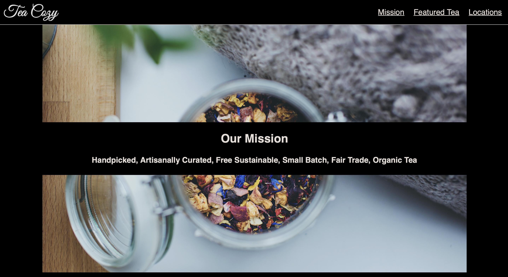

About me
HI! I'm Tagir, Russian pupil and code writer, first in the creating new code problems and bugs.
I am one of the first to recognize that vs code have aplications beyound pure calculations, and to have published the first algorithm intended to be carried out by such a machine.
In my free time I like to sleep and eat. I also like to take my chances of winning big.
Projects
Fotomatic

My first (dont test)project and my first flexbox using experience
Tea Cozy
My second project. This was awfull, becouse i sit on my chair 8 hours and finally made this project with blood in my eyes
Mixes Messages
My third project and first Javascript project. This was easy and interesting. That's all.